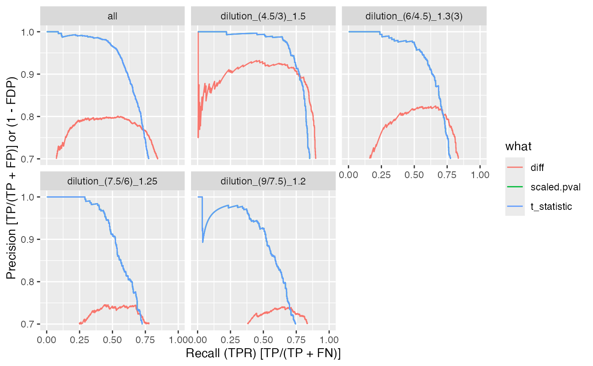

vignettes/Benchmark_proDA_medpolish.Rmd
Benchmark_proDA_medpolish.Rmd
knitr::opts_chunk$set(echo = TRUE, warning = FALSE, message = FALSE)
evalAll <- require(proDA)## Loading required package: proDA
SAVE = TRUE
datadir <- file.path(find.package("prolfquadata") , "quantdata")
inputMQfile <- file.path(datadir,
"MAXQuant_IonStar2018_PXD003881.zip")
inputAnnotation <- file.path(datadir, "annotation_Ionstar2018_PXD003881.xlsx")
mqdata <- list()
mqdata$data <- prolfqua::tidyMQ_Peptides(inputMQfile)
length(unique(mqdata$data$proteins))## [1] 5295
mqdata$config <- prolfqua::create_config_MQ_peptide()
annotation <- readxl::read_xlsx(inputAnnotation)
res <- prolfqua::add_annotation(
mqdata$data,
annotation,
fileName = "raw.file"
)
mqdata$config$table$factors[["dilution."]] = "sample"
mqdata$config$table$factors[["run_Id"]] = "run_ID"
mqdata$config$table$factorDepth <- 1
mqdata$data <- prolfqua::setup_analysis(res, mqdata$config)
lfqdata <- prolfqua::LFQData$new(mqdata$data, mqdata$config)Filter the data for small intensities (maxquant reports missing values as 0) and for two peptides per protein.
lfqdata$data <- lfqdata$data |> dplyr::filter(!grepl("^REV__|^CON__", protein_Id))
lfqdata$filter_proteins_by_peptide_count()
lfqdata$remove_small_intensities()
lfqdata$hierarchy_counts()## # A tibble: 1 × 3
## isotope protein_Id peptide_Id
## <chr> <int> <int>
## 1 light 4178 29879
tr <- lfqdata$get_Transformer()
subset_h <- lfqdata$get_copy()
subset_h$data <- subset_h$data |> dplyr::filter(grepl("HUMAN", protein_Id))
subset_h <- subset_h$get_Transformer()$log2()$lfq
lfqdataNormalized <- tr$log2()$robscale_subset(lfqsubset = subset_h)$lfq
lfqAggMedpol <- lfqdataNormalized$get_Aggregator()
lfqAggMedpol$medpolish()
lfqtrans <- lfqAggMedpol$lfq_aggTo use proDA, we need to create an
SummarizedExperiment. We use the to_wide
function of prolfqua to get the data in in the
SummarizedExperiment compatible format.
se <- prolfqua::LFQDataToSummarizedExperiment(lfqtrans)As usual, two steps are required, first fit the models, then comptue the contrasts.
fit <- proDA::proDA(se, design = ~ dilution. - 1,data_is_log_transformed = TRUE)
contr <- list()
contr[["dilution_(9/7.5)_1.2"]] <- data.frame(
contrast = "dilution_(9/7.5)_1.2",
proDA::test_diff(fit, contrast = "dilution.e - dilution.d"))
contr[["dilution_(7.5/6)_1.25"]] <- data.frame(
contrast = "dilution_(7.5/6)_1.25",
proDA::test_diff(fit, contrast = "dilution.d - dilution.c"))
contr[["dilution_(6/4.5)_1.3(3)"]] <- data.frame(
contrast = "dilution_(6/4.5)_1.3(3)",
proDA::test_diff(fit, contrast = "dilution.c - dilution.b"))
contr[["dilution_(4.5/3)_1.5"]] <- data.frame(
contrast = "dilution_(4.5/3)_1.5",
proDA::test_diff(fit, contrast = "dilution.b - dilution.a" ))
bb <- dplyr::bind_rows(contr)## [1] 4178
ttd <- prolfqua::ionstar_bench_preprocess( bb , idcol = "name" )
benchmark_proDA <- prolfqua::make_benchmark(ttd$data,
contrast = "contrast",
toscale = c("pval"),
fcestimate = "diff",
benchmark = list(
list(score = "diff", desc = TRUE),
list(score = "t_statistic", desc = TRUE),
list(score = "scaled.pval", desc = TRUE)
),
model_description = "proDA_medpolishInt",
model_name = "proDA_medpolishInt",
FDRvsFDP = list(list(score = "adj_pval", desc = FALSE))
, hierarchy = c("name"), summarizeNA = "t_statistic"
)
sum(benchmark_proDA$smc$summary$name)## [1] 4178
sumarry <- benchmark_proDA$smc$summary
prolfqua::table_facade(sumarry, caption = "nr of proteins with 0, 1, 2, 3 missing contrasts.")| nr_missing | name |
|---|---|
| 0 | 4178 |
res <- benchmark_proDA$pAUC_summaries()
knitr::kable(res$ftable$content,caption = res$ftable$caption)| contrast | what | AUC | pAUC_10 | pAUC_20 |
|---|---|---|---|---|
| all | diff | 92.87071 | 66.41813 | 78.70583 |
| all | scaled.pval | 92.98482 | 72.56074 | 79.12663 |
| all | t_statistic | 92.98482 | 72.56074 | 79.12663 |
| dilution_(4.5/3)_1.5 | diff | 94.61101 | 81.30717 | 86.53583 |
| dilution_(4.5/3)_1.5 | scaled.pval | 94.19288 | 81.52638 | 85.09397 |
| dilution_(4.5/3)_1.5 | t_statistic | 94.19288 | 81.52638 | 85.09397 |
| dilution_(6/4.5)_1.3(3) | diff | 92.05837 | 66.72321 | 78.40339 |
| dilution_(6/4.5)_1.3(3) | scaled.pval | 92.10481 | 72.99698 | 78.92297 |
| dilution_(6/4.5)_1.3(3) | t_statistic | 92.10481 | 72.99698 | 78.92297 |
| dilution_(7.5/6)_1.25 | diff | 91.74327 | 58.60092 | 74.26792 |
| dilution_(7.5/6)_1.25 | scaled.pval | 92.07222 | 67.19119 | 75.01068 |
| dilution_(7.5/6)_1.25 | t_statistic | 92.07222 | 67.19119 | 75.01068 |
| dilution_(9/7.5)_1.2 | diff | 92.94011 | 57.98871 | 75.34854 |
| dilution_(9/7.5)_1.2 | scaled.pval | 93.50843 | 68.18403 | 77.57506 |
| dilution_(9/7.5)_1.2 | t_statistic | 93.50843 | 68.18403 | 77.57506 |
res$barpROC curves
#res$ftable
benchmark_proDA$plot_ROC(xlim = 0.2)plot ROC curves
benchmark_proDA$plot_FDRvsFDP()plot FDR vs FDP
benchmark_proDA$plot_FDPvsTPR()